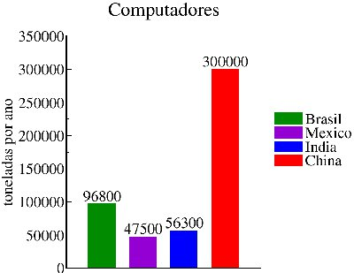

Tais resíduos já representam 5% de todo o lixo produzido pela humanidade. Este valor não parece tão alarmente, entretanto, ele represente 50 milhões de toneladas de resíduos desta espécie, jogadas fora anualmente; O Brasil produz, aproximadamente, 1% deste total, sendo uma quantia aproximada de 2,5kg por habitante. Vale ressaltar que a indústria de eletro eletrônicos está em expansão, e que a cada 6 meses, no máximo, grandes novidades surgem, levando uma enorme parcela da população a trocar seus aparelhos. Os avanços da modernidade facilitam a vida humana, porém, quando falamos em reciclagem, o Brasil está muito atrasado, apesar de sua Lei Federal estar em vigor desde 2010. Calcula-se que em 2013, aproximadamente, 90 milhões de novos celulares entrarão no mercado. E neste mesmo ano, teremos mais de 100 milhões de computadores vendidos. Desta enorme quantia, estima-se que apenas 4% serão devidamente descartados. Os demais serão guardados em casa ou descartados como lixo comum, agravando ainda mais o problema.
Você sabia que:
- Cerca de 40 milhões de toneladas de lixo eletrônico são gerados por ano no mundo.
- Entre os países emergentes, o Brasil é o país que mais gera lixo eletrônico.
- A cada ano o Brasil descarta: cerca de 97 mil toneladas métricas de computadores; 2,2 mil toneladas de celulares; 17,2 mil toneladas de impressoras.
© 2014 Site desenvolvido por Diogo Paradela e Anderson Ramos